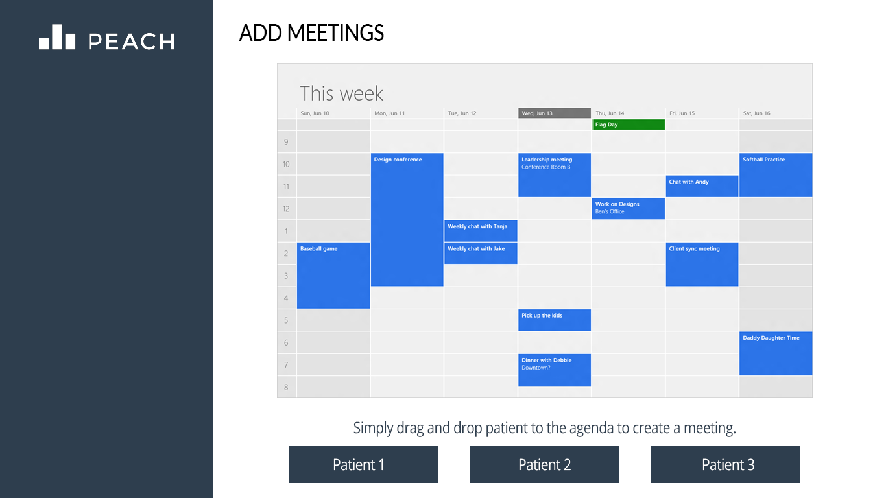
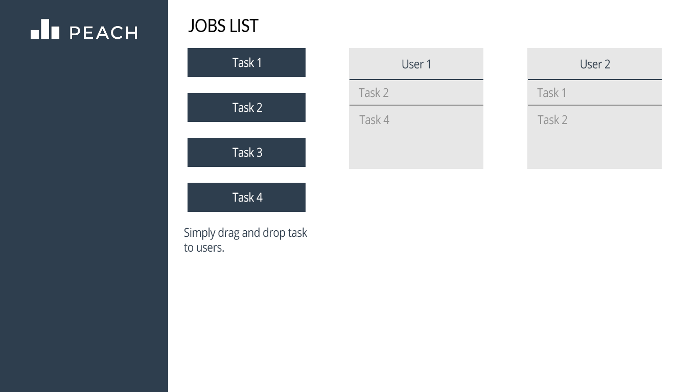
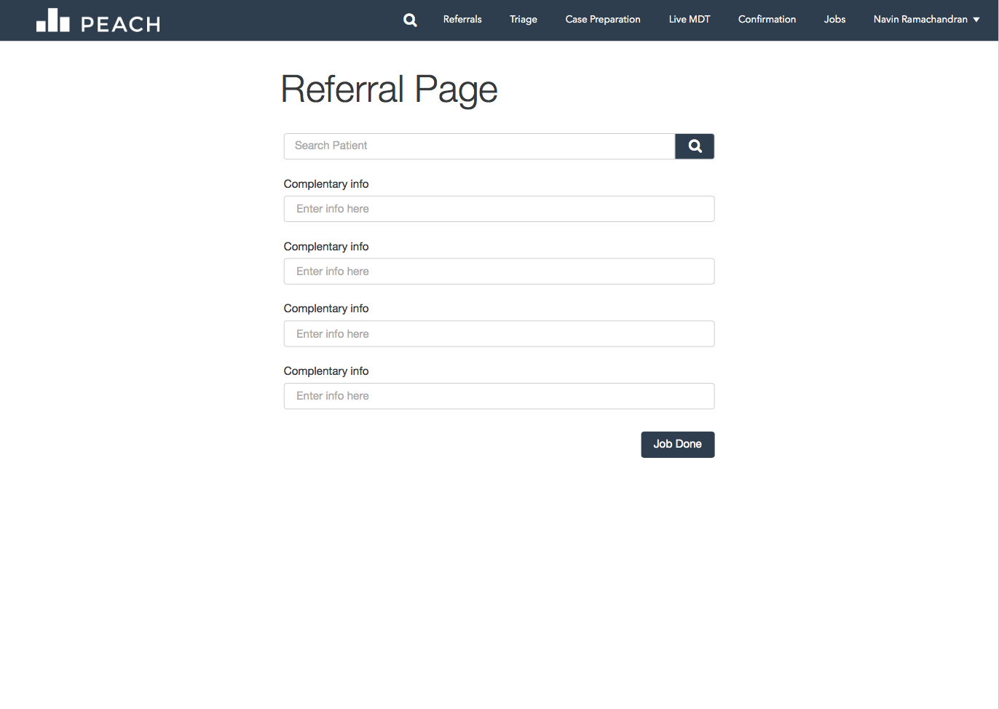
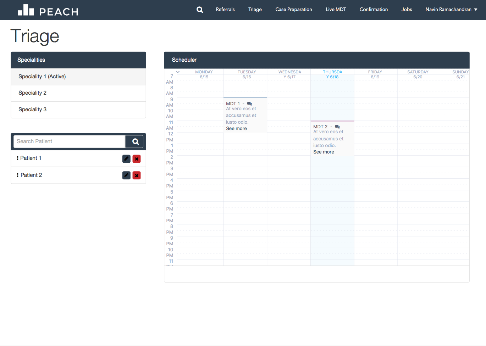
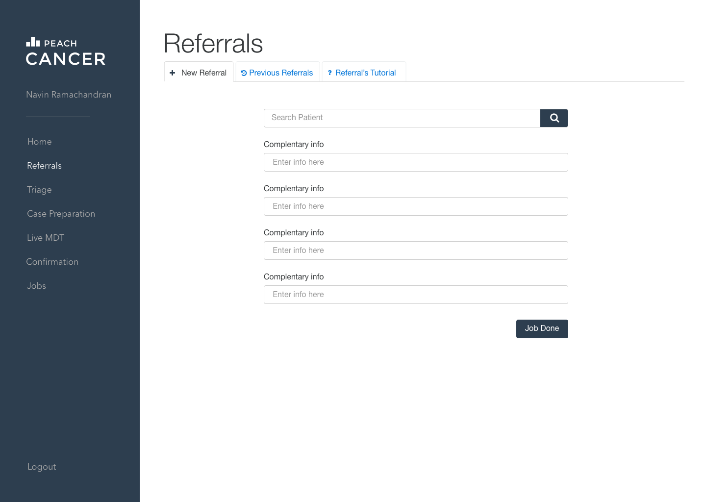
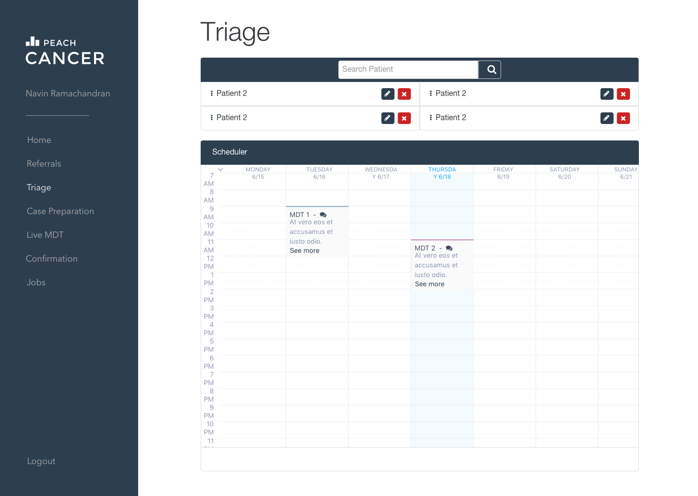
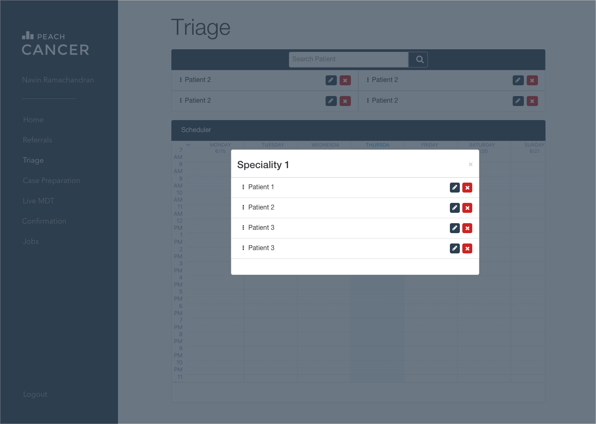
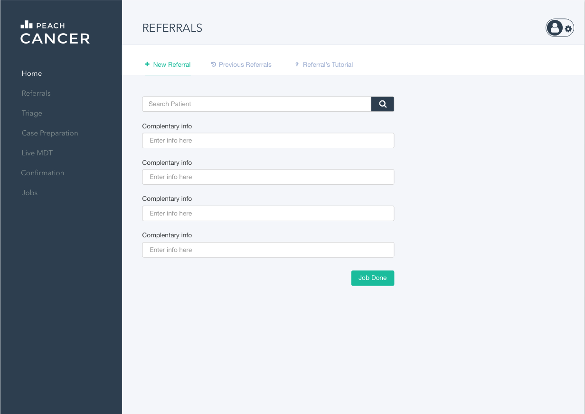
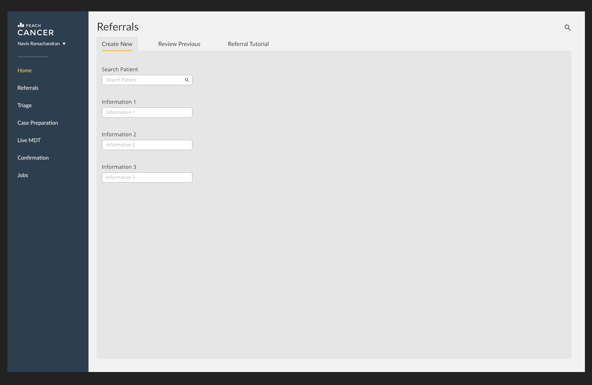

HCI
MOCK-UPS
Click here to see first term Mock-ups.
Another sub-team in the PEACH project is responsible for the UI. They will provide us design guidelines, but also react components ready to use and integrate. However, we still have to build our specific component, such as the calendar, and decide ourselves the content organization of the sub-app we are building. Therefore, the team also designed some mock-ups in order to have a better understanding of the needs.
This first one represents the personal scheduler. A doctor can see all the meetings he is involved in.

At first, our client wanted us to code a worflow manager. We looked into it and tried to search useful ressources to make it. Unfortunately, we realize that it was a very complicated task, so we are simply going to hardcode the worflow of the app instead. The following mockup was done to represent the interface of the workflow manager.

The following mockup represents the interface where an admin can manage meetings. Result of patient search appears below the calendar, and patients can be dragged to any meeting.
This last screen is where the MDT (multi-disciplinary team) coordinator assigns job to all of the teams member.
Before the actual implementations of the app, we had to do severals iterations of mock-ups and wireframes. For each iterration, we were sending our mockups to our client directly over ryver. Thanks to this, we were able to get feedback really quickly. We even collaborated with our client using google docs. Here is an extract of each of the iterrations.
First version of the mock-up (Click here to see the full first version):
 
Second version of the mock-up (Click here to see the full secund version):



Third version of the mock-up (Click here to see the full secund version):

Last version of the mock-up:

HCI PRINCIPLES
While developing the app, we modified some components several times to follow the HCI principles, which makes it accessible to the potential users of the app.
Visibility
The appearance of the app was made as simplistic as possible. We changed the location of the navigation bar initially from the top to the left, and made it significantly bigger, so that users can easily see the different available tabs.
Affordance
We made several UI changes to make it obvious for users to understand how to use our app. Some components have basic instructions to make it obvious for users to use it. This includes the drag-and-drop scheduler, and the select form used to search for patients in the database.
Feedback
Some components made notifications whenever an action is done. For example, using ‘react-notify-toast’, a notification pops up telling the user that the referral form has been submitted. Also, a spinner can be seen when the scheduler tries to load up the patients from the database.
Consistency
The appearance of the app was hugely influenced by this principle. We decided to use React bootstrap to model our app so that it remains similar to other websites that people would regularly use. Certain bootstrap icons were also used consistently throughout the app to imply the same function. Besides that, the basic design and fonts of the overall app follows the design guide set by the Peach team, making every page consistent to each other.
Mapping
The sidebar was changed several times. In the current version, the words in the selected tab on the sidebar turns yellow. This allows the user to know which section they are currently in.
Constraints
Some constraints were implemented in terms of user types. For instance, the referral form can only be submitted when a user is logged in as an admin. This prevents users who have not logged in from accessing the functionalities of the app.
SCREENSHOTS
You can visit the live appliation here: http://peachteam35.uksouth.cloudapp.azure.com/